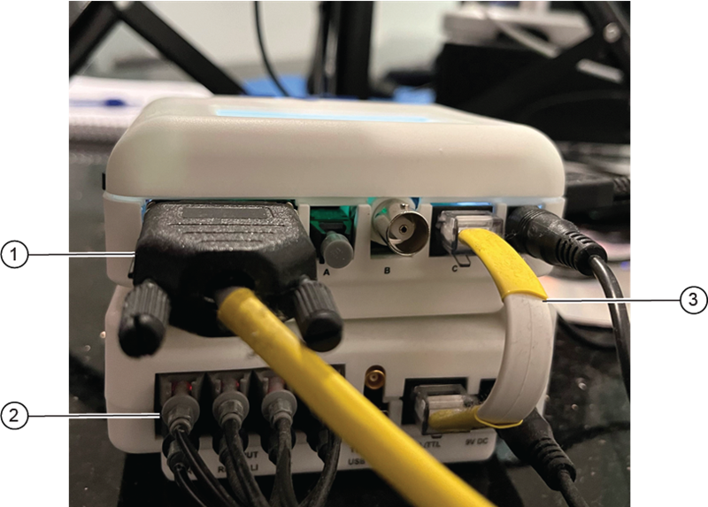
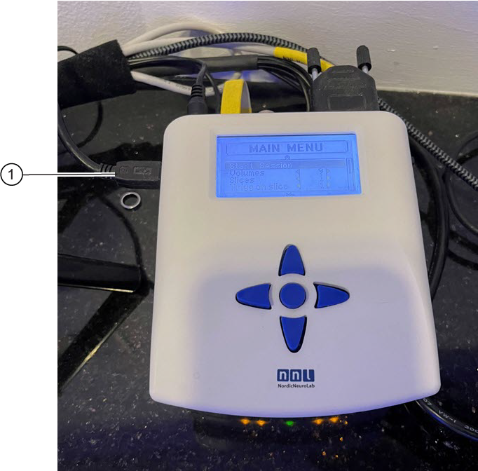
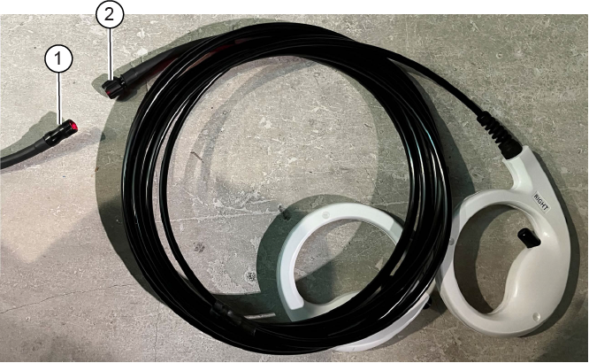

- 00000018WIA30D62E40GYZ
- id_20197862.18
- Dec 30, 2022 1:42:10 AM
Installing additional BrainWave On Console cables
Cedrus Lumina Hardware
Procedure
- In the control room and equipment room:
- Attach the cable to one of the 9-pin filters at the sub-panel.
- Insert the other end of the cable into the back of the Cedrus Lumina control unit, and put it on the GOC.
Figure 1. Cedrus Lumina Controller with cable installed 
- Attach the cable to one of the 9-pin filters at the sub-panel.
- In the magnet room:
- Attach the shielded cable to the other side of the 9-pin filter inside the magnet room at the sub-panel.
- Attach the other end of the shielded cable to the OTEC unit inside the magnet room.
Figure 2. OTEC unit and response pads 
- If you are installing video hardware on a Dell T5820 PC, install the Dongle mini DP male to DP female (5795077) to DisplayPort to VGA Video Adapter Converter (5748906) and then use the VGA adapter Converter to connect to the display (either monitor or goggles).Note: If the display connectors are still not compatible, request the third-party display solution provider to supply adapters as necessary.
- To connect the trigger cable:
- Open the PGR cabinet. Install the trigger cable on J16 on the exciter. This cable can go through the top of the PGR cabinet.
Figure 3. J16 location on master exciter board 
- Open the PGR cabinet. Install the trigger cable on J16 on the exciter. This cable can go through the top of the PGR cabinet.
NNL Hardware
Procedure
- ResponseGrip – Operator Room Setup
- Route the ResponseGrip Bundle optical cable in the operator room to the ResponseGrip Interface.
- Connect the ResponseGrip Bundle to the corresponding inputs on the ResponseGrip Interface, follow the blue and gray color coding and labeling on the connectors.

1 Trigger cable 2 Optical cable 3 Patch cable - Connect the trigger cable to the appropriate input on the SyncBox and the other end to J16.
- Connect the Response Grip Interface to the stimulus presentation PC using the USB cable or the patch cable.
- One end of the USB cable is connected to the mini-USB port and other end to an available 2.0 USB port on the stimulus presentation host PC or docking station/blackbox of the tablet PC.
- The patch cable is connected to the RJ-45 port and to the matching port on the SyncBox following the labeling on the cable.

- Connect the 9V power supply to the 9V DC inlet using the provided splitter cable. Both the SyncBox and Response Grips are powered from the same power supply.
- Make sure the ResponseGrip Interface is switched off and then connect the power cable to the 9V power supply and the mains outlet.
- Turn on the ResponseGrip Interface. The light indicator on the ResponseGrip Interface should now be active.
- ResponseGrip – magnet room setup
- Feed the cable trough the waveguide into the operator room, and route to the desired location in the magnet room.
- Connect the ResponseGrip handles to the ResponseGrip bundle when all cable routing has been finalized.
Figure 4. ResponseGrip handles and bundle 
1 ResponseGrip bundle 2 ResponseGrip handles - Slide the end of response grip bundle and response grip cable using the sloth and hand tight to secure the manual connection.
- To connect the trigger cable:
- Open the PGR cabinet. Install the trigger cable on J16 on the exciter. This cable can go through the top of the PGR cabinet.
Figure 5. J16 location on master exciter board
- Open the PGR cabinet. Install the trigger cable on J16 on the exciter. This cable can go through the top of the PGR cabinet.
NNL VisualSystem HD
About this task
NNL In Room LCD Display
About this task
Note: For entire setup in detail, refer to NordicNeuroLab LCD monitor (InroomViewingDevice) LCD 3.1 - User Manual